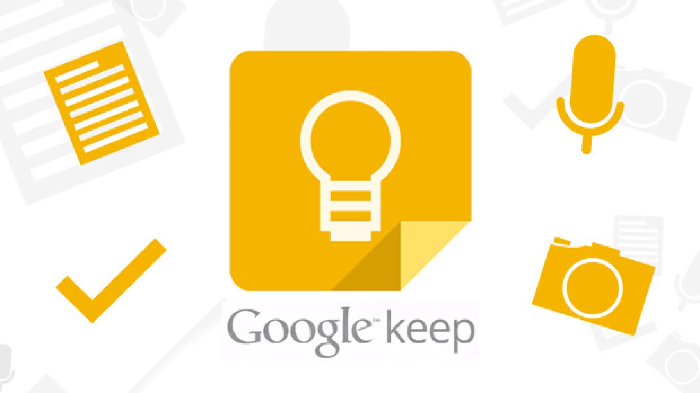

Google Keep

Su diseño está pensado para ser minimalista, rápido y accesible, permitiendo capturar información en segundos. Toda la información queda sincronizada automáticamente en cualquier dispositivo conectado a la misma cuenta Google.Google Keep destaca por ayudar a mejorar la organización personal y profesional, facilitando la administración diaria de pendientes y recordatorios.Es especialmente útil para estudiantes, trabajadores y cualquier persona que necesite guardar información de manera inmediata.
¿Para qué sirve?
Google Keep sirve para almacenar información personal y organizar actividades diarias. Se utiliza para:
- Tomar apuntes rápidos.
- Crear listas de compras.
- Guardar ideas de proyectos.
- Crear recordatorios.
- Organizar tareas pendientes.
- Registrar notas de estudio.
- Guardar enlaces o imágenes importantes.
- Grabar notas de voz.
También puede utilizarse para trabajo colaborativo, compartiendo notas con otros usuarios.
Características
- Notas rápidas.
- Listas.
- Recordatorios.
- Notas de voz.
- Etiquetas.
- Colores.
- Sincronización automática.

Ventajas
- Rápido.
- Gratuito.
- Fácil organización.
- Disponible en todos los dispositivos.
Desventajas
- Funciones básicas.
- Poco formato avanzado.